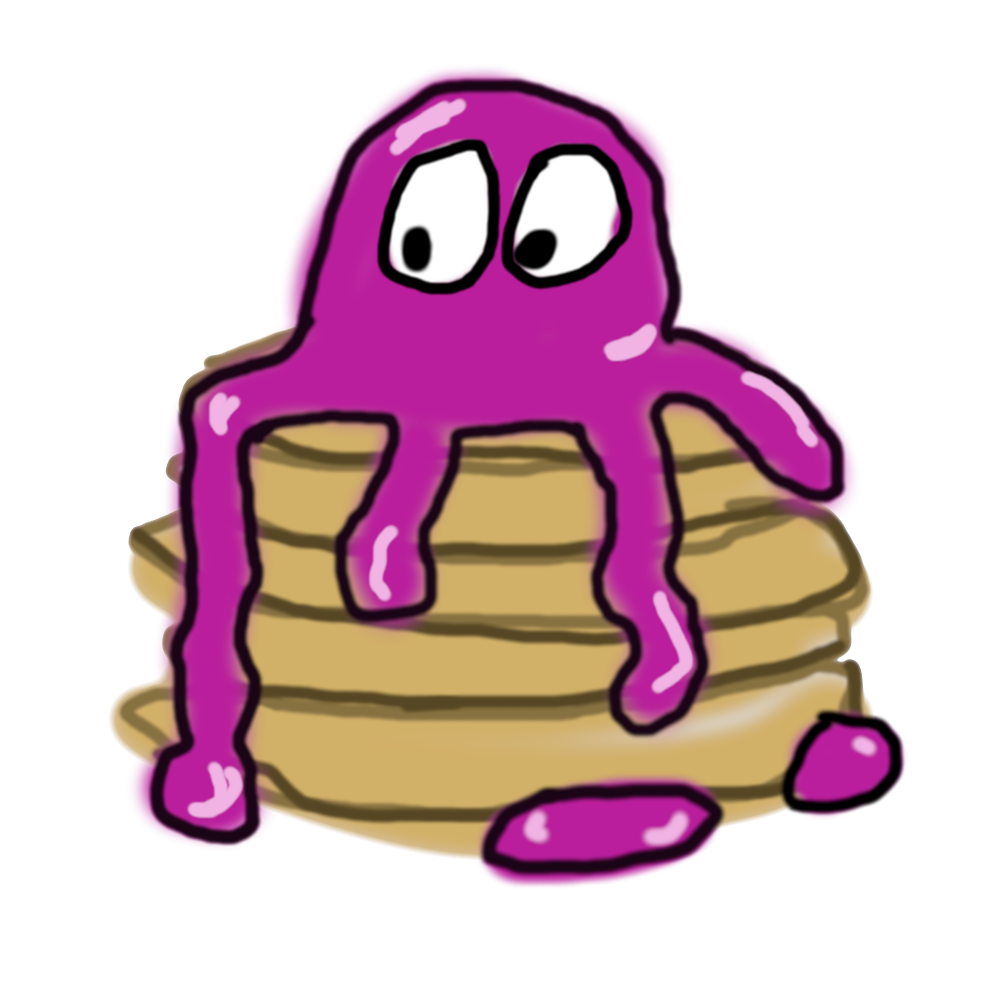

 Delicious breakfast in the form of a stack
Who am I?
The real question is, who am I not? I contain multitudes. I've proven again and again that Tri-Stringer is a viable weapon at the very lowest levels. I'll get back to you on that.